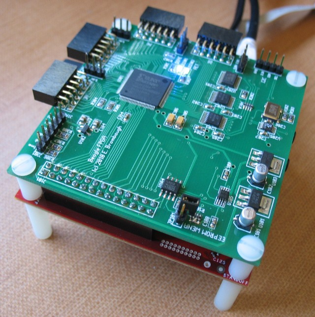

Beagle FPGA Expansion Board

Assembled board w/ Beagle
What is it?
This is a small (3.1" x 3" - same size as Beagle) board with a Xilinx Spartan
3A FPGA connected directly to the Beagle expansion connector. Designed to mount
back-to-back with the Beagle using 3/8" stand-offs, it provides the following
features:
- Xilinx XC3S200AVQ100 Spartan 3A FPGA with 200kgates, 16 Multipliers and 288kb RAM.
- 50 MHz crystal oscillator
- Linear Tech LTC6904 I2C 10kHz-68MHz programmable CMOS clock oscillator
- Beagle community standard I2C ID EEPROM
- 4 x Digilent-compatible I/O ports with 8 FPGA I/O, VDD (selectable 5V or 3.3V) and GND.
- 3.3V I2C port for off-board serial expansion.
- JTAG port for FPGA development and debugging.
Background
Motivation
The impetus for this board is to experiment with FPGA-based audio synthesis
algorithms, Software-Defined Radio and miscellaneous interfacing.
Versions
The original version of the Tracker (pictured above) is a one-off personal
project intended as a proof-of-concept. A commercial version is being
considered which will have a few minor modifications to allow more I/O
flexibility. Follow its progress at
www.elinux.org/BeagleBoard_Tracker
Design Details
Expansion Connector
All GPIO/Muxed signals on the Beagle Expansion connector are routed to the
FPGA, with the exception of the I2C signals which are used for ID and control
on-board. Configuration of the FPGA uses SPI port 4, so your kernel will have
to support this and alternate functions for these pins are probably not
practical without some serious kernel code changes. That shouldn't be a big
issue though, because the FPGA bitstream can use SPI port 4 for control, or
route it through to the I/O connectors after configuration. All other GPIO
pins connect without restriction, aside from direction controls which must be
setup via I2C for GPIO_130-GPIO_132 and GPIO_157.
The 1.8V, Reset and Regen pins are not used.
Configuration
This board has no on-board flash for the configuration of the FPGA - the
configuration is written to the FPGA by the Beagle board via SPI port 4.
This allows the board to be re-configured at any time merely by restarting
the configuration and downloading a new bitstream from the Beagle.
A PCF8754 I2C port expander controls the configuration process and
also provides direction control for some signals that had to be
level shifted. The port expander is at I2C address 0x38.
A bitstream download application which uses kernel I2C and SPIDEV drivers
to manage the process will be provided for userland setup. After configuration
these interfaces can also be used to control the FPGA.
JTAG
A 6-pin JTAG header is provided for external configuration and debug. It
conforms to the Digilent JTAG pinout, but can also be used with Xilinx
download cables if flywires are used. This is handy for testing the FPGA
without the Beagle attached, or for debugging designs using Xilinx's
Chipscope application.
ID
A 128-byte I2C EEPROM is available for conformance with the Beagle Expansion
board ID standard. While normally write-protected, a Write-Enable jumper is
provided to set the ID and any other data stored in the EEPROM. This device
uses address 0x50h
I2C
A 3.3V level shifted version of the Beagle I2C2 bus is available, along with
3.3V supply and GND on a 4-pin header. This can be used to add I2C peripherals
off-board. Bear in mind that there alread 3 devices (ID EEPROM, Port Expander
and Clock Oscillator) on the bus, so check that any additional devices don't
collide with those already on the bus.
Digilent Ports
These are 12-pin right-angle 0.1" receptacles which conform to the Digilent
PMOD standard. Each connector provides 8 bits of direct connection to the FPGA,
along with two power and two ground connections. Power is jumper selectable as
either 3.3V or 5V on a per-connector basis.
Digilent (and others) sell a variety of I/O boards for this
standard that are inexpensive, small and provide a wide range of interfacing
opportunities, including Ethernet, RF/Wireless, motor control, audio, etc.
Find out more at
Digilent's site.
There are two of these connectors on two sides of the board, spaced at the
same interval as is found on Digilent FPGA boards, so standard two-connector
boards with up to 16 I/O signals are possible.
FPGA
The Xilinx XC3S200A Spartan 3A FPGA on this board is inexpensive (about
$10 in single quantity) and provides sufficient I/O and logic resources to
perform a wide range of interfacing and processing tasks. Simple signal
processing, sequencing and control are certainly possible, as well as some
buffering and reformatting using on-chip RAM.
LEDs
Two LEDs are on-board. A blue one labled "DONE" lights when the FPGA has a
valid configuration. A green one labled "ACT" is connected to an I/O pin on
he FPGA and can be used as a visual annunciator of internal activity.
Clocks
No dedicated clocks are provided on the Beagle expansion header, so this board
provides two clock sources. A crystal oscillator generates a stable 50MHz
clock suitable for high-accuracy timing, while an I2C-programmable oscillator
supplies a variable clock in the 1kHz to 68MHz range with less accuracy and
more jitter. This device is at I2C address 0x17.
Power
On-board 3.3V, 1.8V and 1.2V LDO regulators derive all the supplies required
from the Beagle 5V supply provided on the expansion connector. While the 3.3V
and 1.2V regulators which supply the FPGA I/O and Core voltages are rated for
close to 1A, it is recommended that FPGA designs which require high power are
not considered for this board. Although the Spartan 3A chip used here can
operate at fairly high internal frequencies approaching 200MHz, the practical
limitations of power supply and heat management will constrain the designs
that can safely be realized on this board.
Software
Kernel
Minimal kernel driver support required for the Tracker includes I2C2 and SPI
port 4 with SPIDEV, as well as pin muxing to make these interfaces available
on the Beagle expansion port. Since the Tracker conforms to the Beagle IDPROM
standard it is already automatically recognized by recent versions of u-boot
and pin-muxes are correctly set. Kernel patches to enable I2C2 and SPI4 may
be required however - find out more about how to do this at
emeb's Beagle page.
A complete patch against the Angstrom stable 2.6.29 kernel is here:
bfpga.patch
A patch against the Angstrom unstable 2.6.32 kernel is here:
0045-ARM-OMAP-beagle-add-support-for-beagleFPGA-expansion.patch
User
A Beagle user-space application and access library is provided which supports
command-line bitstream loading and control of the features on the board. The
application can be used to download FPGA configuration files, control the
programmable clock oscillator and test the SPI control port. The access
library provides a low-level API for control of the I2C and SPI ports,
as well as higher level functions for bitstream download and may be used
to construct complex user-space applications for interaction with the FPGA
design. Full source for this is provided below, but you can also get it
rom here:
git://gitorious.org/bfpga_lib/bfpga_lib.git
A "Manufacturing Test" program is also available which exercises all the
expansion port pins between the Beagle and the FPGA, as well as the Digilent
output ports and the on-board clock oscillators. The program can be used
as an example of accessing GPIO, controlling the level shifter directions
and talking to the FPGA's designed-in SPI control port. Note that this
requires some kernel hacking to make Beagle GPIO pins 144-146 available via
SYSFS. More details on that later.
FPGA Design
Synthesizing an FPGA design requires the Xilinx ISE Webpack which is
a free download from the Xilinx website. This suite of tools includes a
GUI IDE as well as command-line applications that can be run under both
Linux and WinXX. Designs can be created with either Verilog or VHDL. Demo
designs will be provided to showcase the capabilities of the Tracker board
and will provide enough detail for starting on custom designs.
Design Documentation
Status
- 04-04-10 - SPI Loopback works.
- 04-06-10 - Start Schematic.
- 04-07-10 - Start Layout.
- 04-09-10 - Preliminary Layout Complete.
- 04-12-10 - Revised Layout for proper footprints and backside connector.
- 04-14-10 - Cleanups, fix exp. connector location to match.
- 04-14-10 - Prototype boards ordered. Wait ~3 weeks...
- 05-06-10 - Prototype boards arrive
- 05-09-10 - Partial assembly - all I2C slaves and level shifts work
- 05-10-10 - Assembly complete - FPGA works, I2C reset works
- 05-12-10 - Bitstream download from Beagle works - app source posted.
- 05-13-10 - Tested SPI loopback, added Prog Osc ctl, revised app source posted.
- 05-14-10 - Started git repository. Added SPI read/write, v0.3 app source posted.
- 05-15-10 - Updated kernel patch w/ I2C2, new picture, edit schematic.
- 05-18-10 - Works with 2.6.32 - patch posted.
- 05-29-10 - Manufacturing test v0.2
- 09-20-10 - Added FPGA project for Mfg Test
Return to Beagle page.
Last Updated
:2010-09-20
Comments to:
Eric Brombaugh